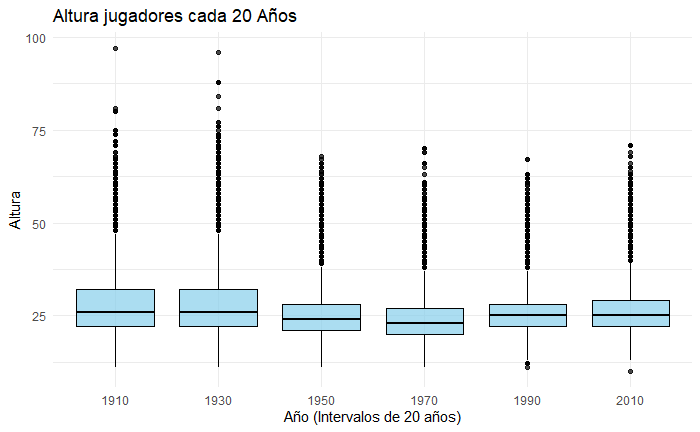
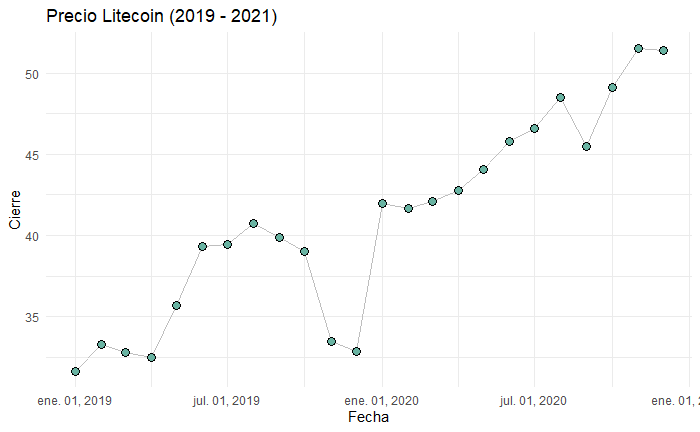

PEC2: Estudio de técnicas de visualización de datos
Timeline
- Popes Over The Years: https://www.kaggle.com/datasets/thedevastator/popes-and-antipopes-a-chronological-list?select=df_2.csv
- Libros y manuscritos antiguos. Clave en redes sociales modernas como Facebook, Instagram...
- Representación de una serie de eventos en orden temporal.
- Historiales médicos, análisis financioneros, análisis de históricos.
- Datos temporales cuantitativos como pueden ser eventos, fechas.
- Ventajas: Indentificación de patrones en eventos temporales
- Desventajas: Si el dataset es grande puede afectar a la visibilidad, se necesitan trabajar con escalas temporales y limitado a pocas dimensiones.
Boxplots

- 120 years of Olympic history: athletes and results: https://www.kaggle.com/datasets/heesoo37/120-years-of-olympic-history-athletes-and-results
- Presentado por Mary Eleanor Spear en el libro "Charting Statistics".
- Representa el conjunto de datos en cuatro cuartiles. El rango intercuartilico representa el 50% de los datos, la línea del medio es la mediana y las líneas externas representan
valores extremos.
- Historiales médicos, análisis financioneros, análisis de históricos.
- Datos temporales cuantitativos como pueden ser eventos, fechas.
- Ventajas: Indentificación de patrones en eventos temporales
- Desventajas: Si el dataset es grande puede afectar a la visibilidad, se necesitan trabajar con escalas temporales y limitado a pocas dimensiones.
Connected scatterplot

- Popes Over The Years: https://www.kaggle.com/datasets/thedevastator/popes-and-antipopes-a-chronological-list?select=df_2.csv
- Libros y manuscritos antiguos. Clave en redes sociales modernas como Facebook, Instagram...
- Representación de una serie de eventos en orden temporal.
- Historiales médicos, análisis financioneros, análisis de históricos.
- Datos temporales cuantitativos como pueden ser eventos, fechas.
- Ventajas: Indentificación de patrones en eventos temporales
- Desventajas: Si el dataset es grande puede afectar a la visibilidad, se necesitan trabajar con escalas temporales y limitado a pocas dimensiones.